15 анимационных сериалов где обсуждают проблемы экологии
Толеубеков ЖасуланАватар Легенда об Аанге (2005-2008) – 3 книга 3 глава (The Painted Lady)
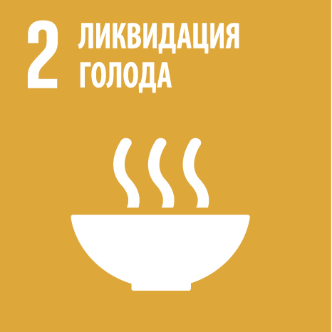
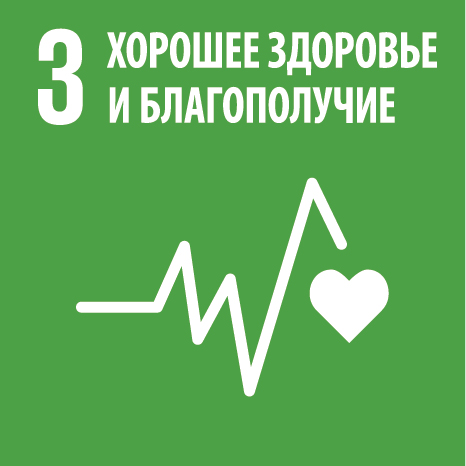
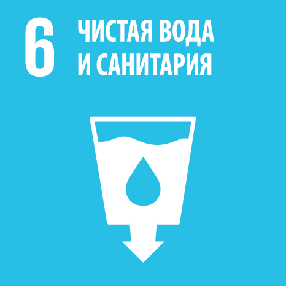
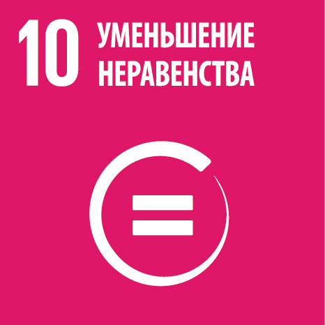
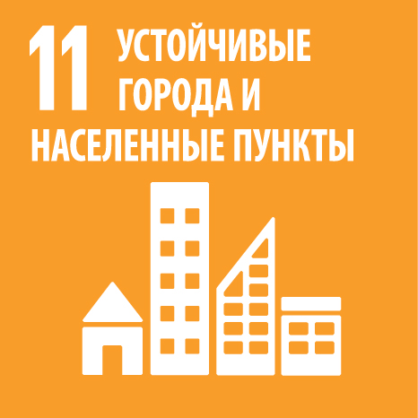
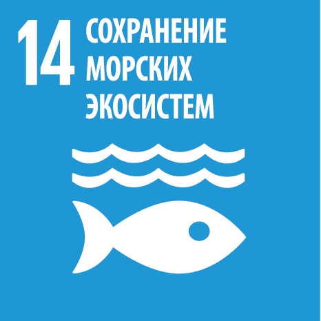
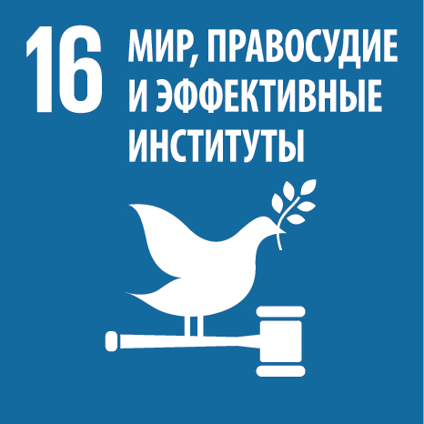
Команда Аватара останавливается в речной деревушке Чан Хуэй,для
пополнения своих запасов. Однако воды реки сильно загрязнены илом с
промышленного завода народа Огня, и рыба которую они покупают совсем не
пригодная для пищи. Загрязнение нарушает местную экосистему и убивает
рыб в водоеме, вызывая голод среди всех жителей деревни.
Желая помочь им, Катара маскируется под Цветную Леди - речного духа,
исцеляющего больных и дающая им еду. Аанг раскрывает тайную личность
Катары и они вместе разрушают фабрику, прекращая выброс загрязняющих
веществ. Впоследствии все жители деревни вместе с командой Аватара
отправились очищать реку.
Катара учит нас тому, что мы не должны ждать, пока кто-нибудь спасет нас
и решит наши проблемы, мы должны сделать это сами.
Ben 10: Ultimate Alien(2010-2012) - 3 сезон 21 серия (The Widening Gyre)
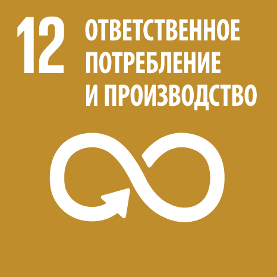
Военные решают сбросить ракету с экспериментальными бактериями,
питающимися пластиком на Тихоокеанский мусорный остров, но бактерии
мутируют,сливаясь с мусором в нечто ужасное. После череды пропаж
кораблей в районе Тихоокеанского мусорного острова, полковник Розум
обратился к команде Бен Тена за помощью. Бен Тен соглашается помочь.
Команда Бен Тена приземляется на остров, наблюдая за огромным
ландшафтом, полностью состоящим из отходов жизнедеятельности людей. Гвен
объясняет, что все это происходит потому, что люди небрежно относятся к
тому, куда выбрасывают мусор. Пластик — материал, пригодный для
вторичной переработки, который не разрушается очень длительное время.
Течения подхватывают его и уносят в одно место, пока все не соберется в
одну гигантскую массу.
Кевин вспоминает мультфильм Captain Planet and the Planeteers,о пяти
героях, способных перерабатывать мусор и бороться с загрязнителями,
который он смотрел в детстве.
Затем Гвен внезапно замечает скелет гигантский мертвой птицы,
наполненный пластиком. По иронии многие птицы умирают от голода, с
желудками забитыми пластиком, так как они не в силах его переварить.
Мой шумный дом (2016-...) - 1 сезон 22 серия (Green House)
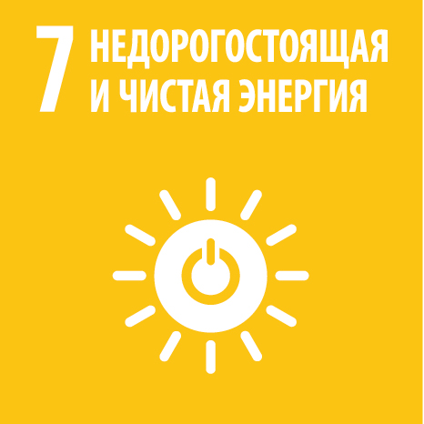
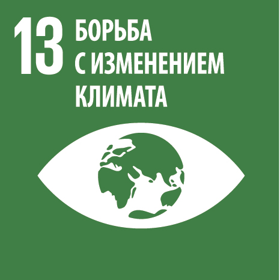
Класс Линкольна участует в экологическом конкурсе «Спасти белого
медвежонка», в котором они должны уменьшить выбросы углерода.Однако
семья Линкольна использует невероятно большое количество энергии для
своих повседневных нужд, и Линкольн может стать изгоем для своих
одноклассников из-за того, что он не достиг зеленой отметки.
У Линкольна на пути стоит огромная задача - сэкономить как
можно больше электричества, чтобы его класс смог победить в конкурсе и
спасти белого медвежонка. Но с десятью сёстрами у Линкольна почти что
нет ни единого шанса.
Линкольн убеждает своих сестер снизить потребление энергии в
доме,показывая им фотографию медвежонка. Линкольн отключает все больше и
больше электроприборов в доме, а затем и вовсе приводит в дом
электричество вручную с крутя педали велосипеда. В конце недели миссис
Джонсон объявляет, что благодаря Линкольну класс выиграл конкурс «Белый
медведь» и Линкольн избегает участи изгоя
Удивительный мир Гамбола (2011–2019) — 6 сезон 26 серия (The Stink)
Серия начинается с того что, Гамбол затрудняется с выбором правильного
бокса, в который нужно положить пластиковую тару и решает выбросить ее в
обычный мусор. Однако, когда он бросает бутылку в мусорное ведро, мистер
Смолл резко выпрыгивает перед ним и говорит Гамболу, что ему следует
сдать ее на переработку.
Гамбол критикует эту концепцию, утверждая, что, как только
ресурсы Земли истощатся они смогут просто перебраться на другую
экзопланету. Чтобы убедить детей бережно относится к ресурсам планеты,
Мистер Смолл показывает мальчикам, как он старается жить с минимальным
экологическим следом: он делает покупки только в экологичных и небольших
магазинах,не принадлежащих корпорациям и монополиям, покупая только
локальную и натуральную продукцию.
Однако Гамбол отмечает,
что так называемый «малый бизнес» принадлежит корпорации Chanax Inc,и
продукты которые стоят на полках далеко не местные, что наталкивает нас
на мысль о том что мистер Смолл стал жертвой гринвошинга.
Леди Баг и Супер-кот (2015-...) - 5 сезон 27 серия (Action)
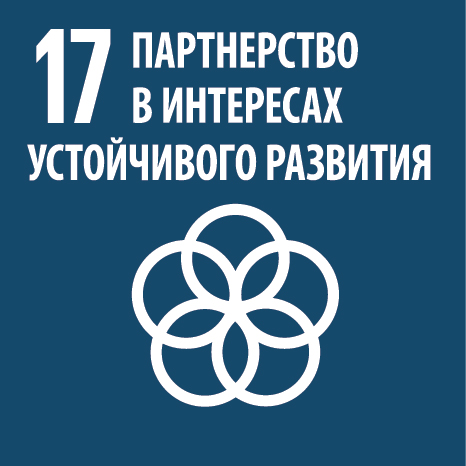
В этой серии команда подростков обьединяет усилия для очистки реки и
сокращения производства одноразового пластика. Выясняется, что
источником их проблемы является Бертран Кинг, крупнейший производитель
пластика. Это наталкивает Маринетт на мысль о том, что они должны
попытаться решить проблему с корня, лично встретиться с ним и убедить
его изменить свою политику.
В офисе Бертрана Кинга подростки проводят презентацию, где рассказывают
о положительных сторонах пластика: его дешево производить, он прочный,
легкий. Затем Милен переходит к негативным моментам: создается слишком
много пластика и что большинство предметов используются только один раз,
прежде чем их выбрасывают. Но Бертран говорит, что в этом и есть вся
суть, его компания зарабатывает деньги на том что люди продолжают
покупать его одноразовую продукцию снова и снова...
Специальный эпизод для повышения осведомленности молодой аудитории о
загрязнении пластиком был выпущен Breteau Foundation вместе с
бесплатными образовательными ресурсами и планами уроков для учителей
начальных классов.
Куда-угодно-дверь Катя и Эф (2018) - 1 cезон 20 серия (Чистая игра)
Катя и Эф отправляются на завод по переработке мусора, чтобы узнать, как сберечь ресурсы на нашей планете и сделать ее чистой!
Фиксики (2010-...) - Cборник серий (Фиксики за экологию)
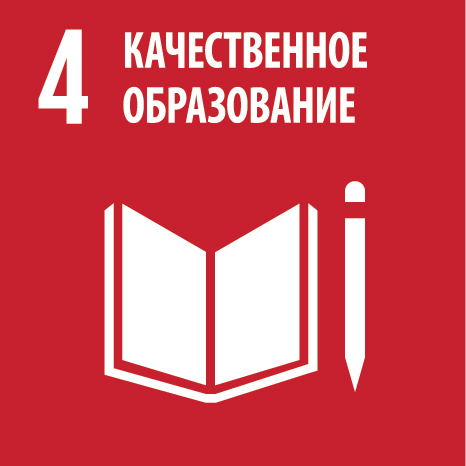
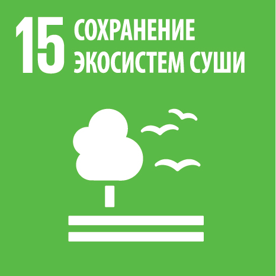
В этих сериях посвященных экологии, фиксики обьяснят как людям нужно поступать , чтобы не наносить вреда нашей планете. Фиксики — за экологию и бережное отношение к природе!
Развлечёба(2018-...) - Окружающий мир
В этом выпуске ученый Кубокот в доступной игровой форме, легко и красочно обьясняет важность экологии. Для каждого выпуска Кубокот приготовил интерактивные игры, где каждый может проверить свою внимательность и память.
Смешарики Пинкод (2012-2019) - Сборник cерий про экологию(Жажда скорости, Отель "У весёлого альпиниста")
Любознательным Смешарикам хочется узнать новое, они стремятся исследовать все вокруг. Пин изобретает такую машину, чтобы вся компания могла совершить научную экспедицию.Смешарики решают отправиться в совместное путешествие, не подозревая, что им предстоит пережить самое захватывающее приключение, которое изменит их взгляд на мир.
Легенда о Тарзане(2001-2003) - 1 сезон 8 серия (Отравленная река)
В этом эпизоде слон Тантор заболевает после того, как напивается водой
из реки. Профессор приходит к выводу, что вода, должно быть, загрязнена.
Тарзан, Джейн и профессор отправляются в опасное путешествие вверх по
реке, чтобы найти источник загрязнения.
Их захватывает туземное племя, которое подозревает, что это они отравили
реку. Но Тарзан обнаруживает источник загрязнения реки - горнодобывающая
деятельность. Тарзан и его друзья объединяются с жителями деревни и
разрабатывают план борьбы с шахтерами.
Жизнь и приключения робота-подростка (2002 – 2006) - 2 сезон 4 cерия (Mind Over Matter)
Мультсериал повествует о приключениях робота-подростка Дженни, чья
основная задача - охранять планету от всевозможных бедствий и
суперзлодеев. Но, как и любой тинейджер, Дженни по натуре не прочь
иногда развлечься и на время забыть о том, что она работает
спасительницей человечества.
В этой серии Брэд покупает себе новый калькулятор и просто напросто
выбрасывает старый в мусорное ведро, тогда то Дженни узнает о
запланированном устаревании вещей.
Позже Дженни терпит поражение от Гигаватта, злодея из космоса
питающегося электричеством. Она пытается использовать новые способы
борьбы с враждебной инопланетной формой жизни, однако они не срабатывают
и Дженни начинает задаваться вопросом, не пора ли ей списать себя в
утиль,как тот старый калькулятор?
Дженни учит нас беречь наши вещи и не совершать импульсивных
покупок,навязанных нам обществом.
Альберт говорит Природа знает лучше! (1995-1997) - 1 сезон 12 серия (Мусор и отходы: бумеранг)
Как окружающая среда перерабатывает то, что ей больше не нужно, что
такое мусор, который создаёт человек, что такое круговорот воды в
природе, как связаны между собой вода и погода, чем важны птицы и
растения, какие существуют источники энергии, почему важно
перерабатывать мусор,как выглядят свалки изнутри и какие ещё способы
обращения с отходами выдумало человечество — все это и многое-многое
другое ребята узнают в увлекательном путешествии вместе с Альбертом .
Герои мультфильма будут учиться сортировать отходы, показывая пример
своим зрителям и воспитывая у детей экологическое сознание, бережное
отношение к природе, сознательное использование ее ресурсов.
Новая школа императора(2006-2008) - Сезон 2, Серия 28 (Эко Кузко )
Изма решает выбросить старые эликсиры,но Кронк останавливает ее. Он убеждает ее выбросить их в специальную урну, на что Изма охотно соглашается. Позже выясняется что Изма обманула Кронка и эта урна ведет прямиком в речку, тем самым загрязняя общественный питьевой фонтанчик. Почти все люди превращаются в животных, кроме Кузко и Мэлина, потому что они пили воду «Эйч Кузко»…
Братья Кратт:Зов природы(2010) - 2 сезон 13 серия (Аквалягушка)
Крис и Мартин исследуют дикую природу всего мира, чтобы побольше узнать
о жизни животных. С помощью специальных супер-костюмов братья Кратт
приобретают умения и способности этих животных. Эта сверхспособность
позволяет ребятам не только наблюдать за дикими зверями, но и выручать
их в опасных ситуациях.
В этом эпизоде братья Кратт и Авива прыгают в пруд с лягушками-быками,
чтобы узнать о них больше и помочь Авиве создать силовой костюм лягушки.
Зак Вармитеч, сбрасывает токсичные отходы в ручей, ведущий к пруду, что
может нанести вред молодым лягушкам, развивающимся головастикам и другим
животным, обитающим в пруду.
Юные титаны вперед!(2013-...) - 7 сезон 17 серия (Поллиэтилен и Тарафталат)
Титаны наслаждаются прекрасным пляжным днем на берегу острова Башни
Титанов, но их отдых расстраивает мусор,которым наполнен океан. Робин
приказывает команде очистить воду от мусора. В конце концов они
натыкаются на две говорящие бутылки с водой по имени Полли Этилен и Тара
Фталат. На самом деле это волшебные пластиковые молекулы объединяющиеся
в «ПЭТ», которые можно переработать практически во что угодно.
Полли и Тара отвозят Титанов на завод по переработке отходов Джамп-Сити,
где происходит большая переработка. Команда наблюдает, как конвейер
превращает загрязненные пластиковые бутылки во всевозможные новые вещи,
такие как ковры, стулья и сумки. Кроме того, Полли и Тара также
заявляют, что люди могут повторно использовать пластик для своих
собственных проектов. Кажется, что мир спасён от мусора, но проблемы
окружающей среды и приближающиеся метеоры говорят об обратном...